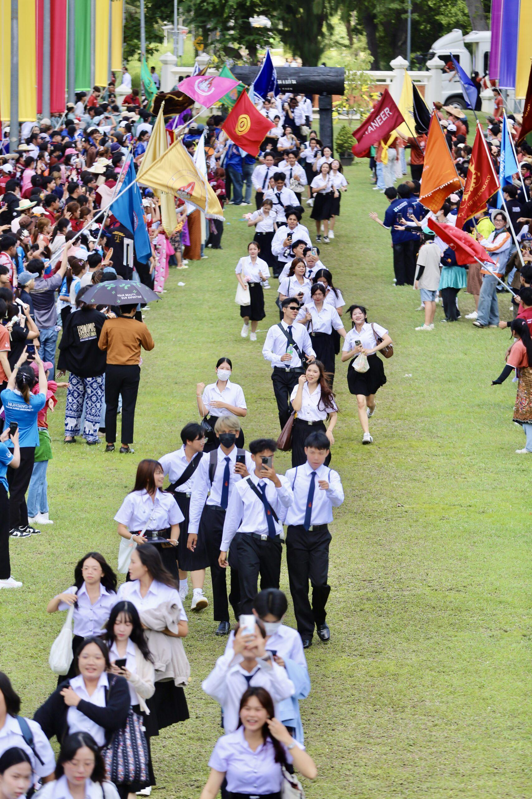

Welcome To
KKU Campus Guide
เว็บไซต์นี้จัดทำขึ้นเพื่อแนะนำสถานที่สำคัญในมหาวิทยาลัยขอนแก่น เหมาะสำหรับนักศึกษาใหม่ นักท่องเที่ยว และผู้ที่สนใจเยี่ยมชม มข. เราได้รวบรวมสถานที่ห้ามพลาด พร้อมรูปภาพและข้อมูลเบื้องต้น เพื่อช่วยให้คุณได้เพลิดเพลินบรรยากาศและสนุกยิ่งขึ้น ❤
จัดทำโดย : 6633380384-9 น.ส.ณิชากานต์ คนกลาง

สำนักหอสมุดกลาง

เปิดท้าย มข.

แปลงกังหัน ทุ่งดอกไม้นานาพรรณ
Learn More
About KKU Campus Guide
มาทำความรู้จัก มข. ให้มากขึ้นกันเถอะ! สำรวจสถานที่น่าไป จุดเช็กอินสุดคิ้วท์ และเพลิดเพลินกับบรรยากาศอบอุ่นภายในมหาวิทยาลัย 💛✨

Take a little journey
and find magic inside KKU.
ศูนย์ประชุมฯ กาญจนาภิเษก
เป็นอาคารขนาดใหญ่ที่ใช้สำหรับจัดงานประชุมระดับชาติ, งานรับปริญญา, และอีเวนต์สำคัญต่างๆ มีพื้นที่กว้างขวางและสถาปัตยกรรมที่โดดเด่น ถือเป็นแลนด์มาร์คสำคัญที่ใช้ในการต้อนรับแขกของมหาวิทยาลัย นักศึกษามักมาใช้พื้นที่บริเวณด้านนอกสำหรับการถ่ายภาพ และกิจกรรมอื่นๆ

สำนักหอสมุดกลาง
เป็นแหล่งรวมความรู้และศูนย์กลางการศึกษาของนักศึกษาและบุคลากร ให้บริการห้องสมุดที่ทันสมัย มีพื้นที่อ่านหนังสือ ห้องค้นคว้า ห้องประชุมกลุ่มย่อย และมีบริการออนไลน์ที่สนับสนุนการเรียนรู้ตลอด 24 ชั่วโมง เป็นสถานที่ยอดนิยมสำหรับนักศึกษาที่ต้องการเตรียมตัวสอบหรือทำงานวิจัย

เปิดท้าย มข.
ตลาดเปิดท้ายเป็นหนึ่งในแหล่งรวมตัวที่ได้รับความนิยมที่สุดของนิสิตนักศึกษา มีทั้งอาหาร เสื้อผ้า ของใช้ และสินค้าแฟชั่นราคาย่อมเยาว์ เปิดให้บริการช่วงเย็นและคึกคักเป็นพิเศษในวันศุกร์–เสาร์ เป็นสถานที่พักผ่อน เดินเล่น และเลือกซื้อของที่ต้องการได้อย่างสบาย ๆ

แปลงกังหัน ทุ่งดอกไม้นานาพรรณ
ทุ่งดอกไม้ภายในมหาวิทยาลัยขอนแก่นเป็นจุดชมวิวและถ่ายภาพยอดนิยม มีการปลูกดอกไม้ตามฤดูกาล ทำให้เห็นสีสันแตกต่างในแต่ละช่วงปี บรรยากาศร่มรื่น เหมาะแก่การเดินเล่น พักผ่อน และเป็นสถานที่ที่นักนิสิตมักมาเก็บภาพความประทับใจ